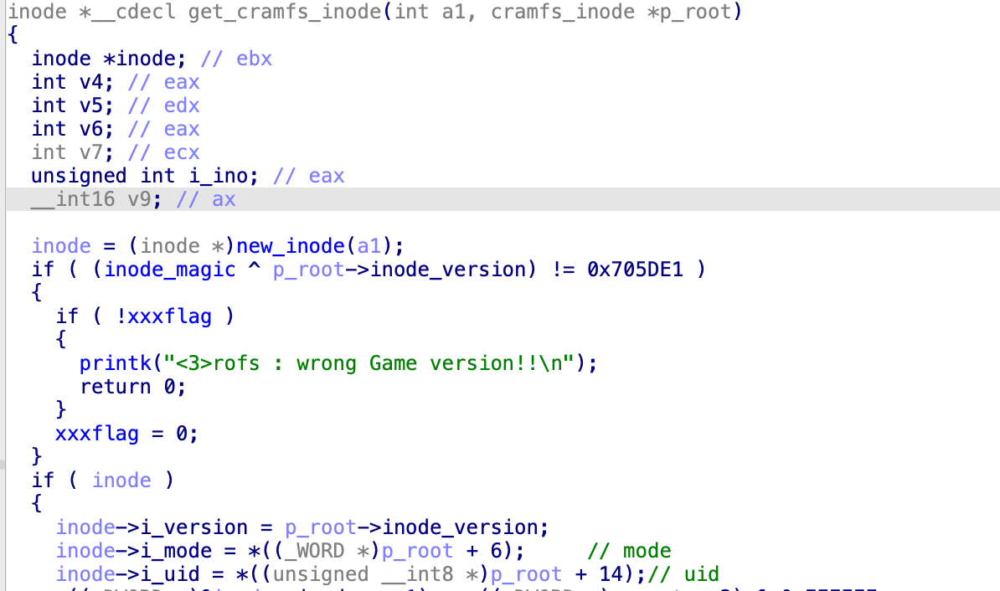
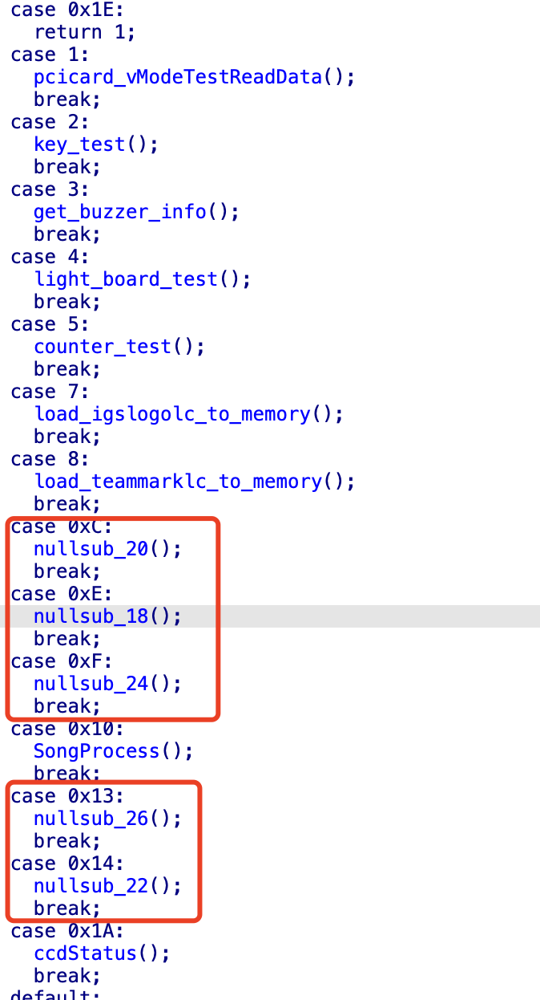
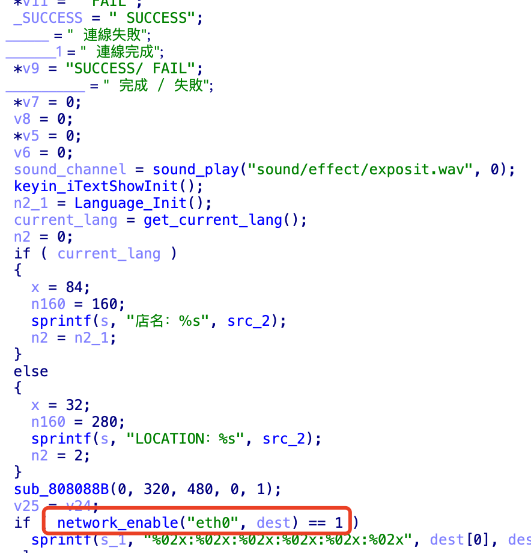
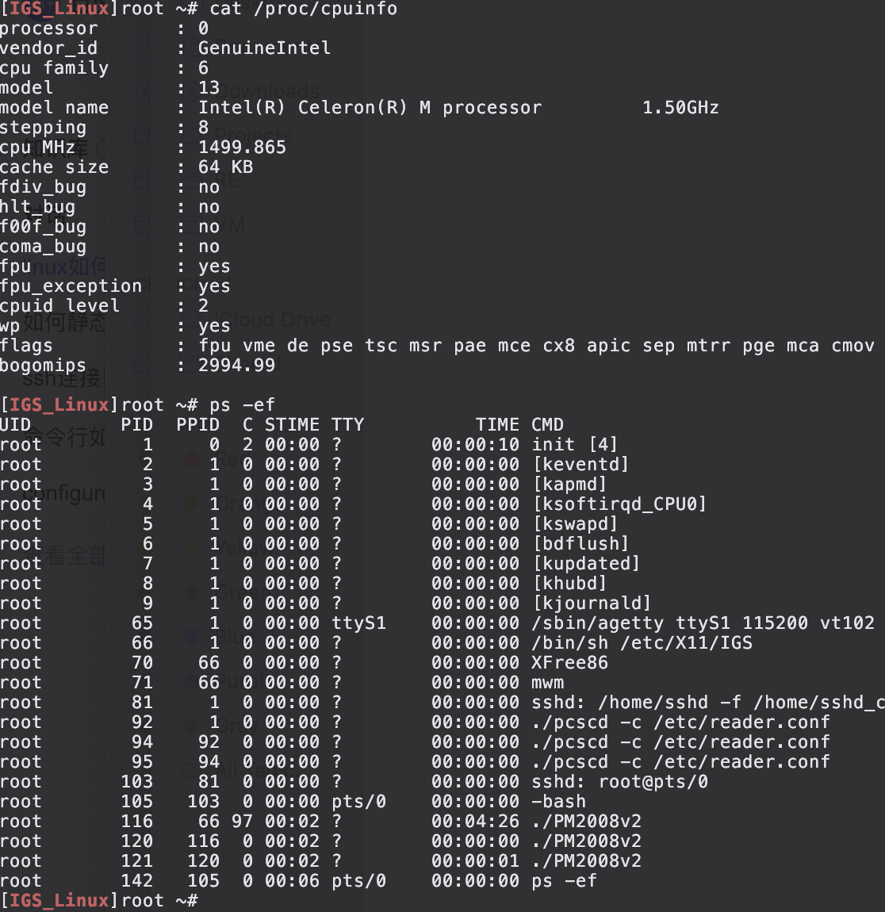
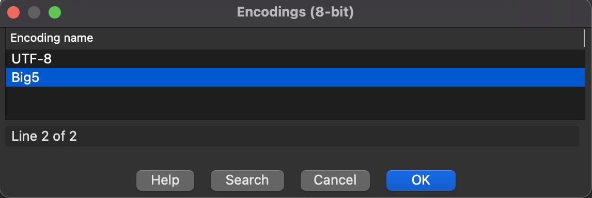
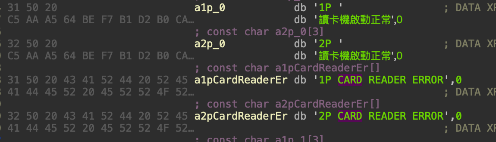

这段时间有不少进展，但是遇到瓶颈了，大概还有有三篇的量，最近很忙，先更新第三篇。
我把芯片贴纸拆开并做了详细的分析工作，第一篇硬件分析方向基本上没错，更新了对IGS的芯片描述，第二篇文章代码有一些bug，已更新。
要高效分析游戏主程序，最好是设备上动态调试，首先需要shell权限。除了CF卡和IO口，我目前几乎没有任何对这个设备输入内容的途径。
如果走串口调试，第一步找到硬件调试口，下一步修改kernel内置的boot command。很麻烦，还要重打包回去，不够优雅。
CF卡有两个分区我可以直接写入，一个就是Kernel所在的Boot分区，另一个是日志和临时文件分区，那个说不定可以getshell，但是Pwn这个硬件不是我的目的。
IGS CRAMFS 重打包
之前我根据IGS魔改的cramfs特征，二次开发了cramfs-tools，但是它只能解包，不能重打包。它是不完美的，我有一点强迫症，想要让它作为真正的toolkits。
IGS 魔改了cramfs的结构体，在cramfs_inode加入了校验值，也就是每次读取inode就会检查。
struct cramfs_super {
unsigned int magic1;
unsigned int future; /* future = CRAMFS_MAGIC ^ IGS_MAGIC_MASK2 ^ IGS_MAGIC_MASK1 */
char igs_info[64];
unsigned int size;
unsigned int magic2;
unsigned int flags;
unsigned int padding;
struct cramfs_info fsid;
char name[64];
struct cramfs_inode root;
};
struct cramfs_inode {
u32 inode_magic;
u32 namelen:CRAMFS_NAMELEN_WIDTH, offset:CRAMFS_OFFSET_WIDTH;
u32 size:CRAMFS_SIZE_WIDTH, gid:CRAMFS_GID_WIDTH;
u32 mode:CRAMFS_MODE_WIDTH, uid:CRAMFS_UID_WIDTH;
};
struct cramfs_info {
u32 crc;
u32 edition;
u32 blocks;
u32 files;
};
在get_cramfs_inode，有一个暗桩，用inode_magic异或根inode的magic，判断是否等于0x705DE1，如果不等于就出错。虽然简单，但是每个游戏都不一样，重复的patch工作也挺烦人的。
下图的可读性看起来不错，是因为我做了一些费时间的工作。其实这里IDA的反编译一开始是识别错误的，和汇编完全不一样。要把结构体先还原了，这里的分支才会正确，不然就会丢失很多代码。

我已经实现了IGS cramfs重打包的功能 igs-toolkits cramfs-tools
Unpack
sudo ./igs-toolkits/cramfs-tools/cramfsck -v -x./out ./test.img
Repack
sudo ./igs-toolkits/cramfs-tools/mkcramfs ./out test.img
修复 Shell 环境
IGS 在新版的PM2008，做了很多阻止破解的措施。这个Kernel非常老，我花了大量时间解决兼容性问题。操作系统，编译工具链，源代码反复测试了许多版本，终于找到了稳定的编译环境。
修复agetty
现在的系统初始化后是没有tty shell的，因为IGS移除了agetty。这个组件位于util-linux。需要重新编译，静态链接。
CC="/opt/gcc_3.2.2/bin/gcc"
LDFLAGS="-static"
DESTDIR=/root/build-linux-utils
export LDFLAGS CC DESTDIR
./configure --enable-static
make
make install
然后在 /etc/inittab，增加下面这行命令。看起来是有115200的串口输出，我还没有在COM口尝试。因为在卧室里研究，场地有限，我喜欢更优雅的调试方式。
1:4:respawn:/sbin/agetty ttyS1 115200 vt102
修复SSH Services
IGS移除了ssh服务，本来想用现成的dropbear，结果没一个能运行。花了大量时间找到个兼容的dropbear 0.53版本，完成静态编译（解决了很多错误），很多特性是在代码里写死的，我甚至做了一些patch，但还会出现奇怪的问题。 于是只能选择ssh，新版的ssh由于弃用了过时加密算法，连接旧版ssh都要指定算法。因此要选择较新版本的openssh，以及openssl。
编译好后生成密钥对，因为算法和格式有差异，所以要重新生成
ssh-keygen -q -t rsa -f ssh_host_key
ssh-keygen -q -t rsa -f ssh_host_rsa_key
sshd_config 需要手动配置这些
HostKey /home/ssh_host_key
HostKey /home/ssh_host_rsa_key
SyslogFacility AUTHPRIV
LogLevel INFO
PermitRootLogin yes
AuthorizedKeysFile .ssh/authorized_keys
PermitEmptyPasswords yes
X11Forwarding yes
Subsystem sftp /home/sftp-server
最后需要修复sshd的权限，否则会出错
mkdir /var/empty
echo "sshd:x:74:74:Privilege-separated SSH:/var/empty/sshd:/sbin/nologin" >> /etc/passwd
在前文提到的启动脚本添加ssh启动命令
/home/sshd -f /home/sshd_config -h /home/ssh_host_rsa_key -p 22 -E /PM2008v2/pm2_data/sshd.log > /PM2008v2/pm2_data/sshd_run.log 2>&1
修复ifconfig并且启用网络
IGS 禁止了网络连接，我在游戏代码里看到是可以联网的，游戏有一个OnlineMode，早期是有全球排名的，但当前版本不支持，代码里有明显的修改痕迹。没有地方可以触发进入OnlineMode。

系统甚至还有DHCP服务。配置IP的逻辑写在代码里。

ifconfig被失效了，应该也是被魔改了，自己重新编译一个。
/home/ifconfig eth0 up mtu 1500 >> /PM2008v2/pm2_data/game_stdout.log 2>&1
/home/ifconfig eth0 192.168.2.128 netmask 255.255.255.0 broadcast 192.168.2.255 >> /PM2008v2/pm2_data/game_stdout.log 2>&1
这样就可以连接外部网络了。
我还编译了一版 busybox，遇到大量兼容性问题，做了一些patch，也花了很多时间才编译成功。二进制文件可以在这里下载
https://github.com/gorgiaxx/igs-toolkits/tree/master/E2000_binaries
将这些文件放到指定目录，然后重打包，写入CF卡，重启设备，ssh服务就可以直接访问了。
由于没有回显，只能将stdout输出到rdisk4s4，也就是ext3分区，读取并挂载查看回显。花了很多时间才调试成功，这两条命令用了无数次。
sudo dd if=/dev/rdisk4s4 of=./rdisk4s4.img bs=1M && rm -rf ./part4 && 7z x ./rdisk4s4.img -o./part4
sudo ../igs-toolkits/cramfs-tools/mkcramfs ./out test.img && sudo dd if=./test.img of=/dev/rdisk4s2 bs=1M
游戏环境分析
E2000主机有两个I/O接口，控制指令来自外部，即使拿到root也玩不了游戏。
游戏主程序
游戏主程序实际运行在/exec/PM2008v2 会启动3个进程

根据地址空间，可以判断出，此程序运行在X11，OpenGL渲染。并且可以控制读卡器。调用了/dev/plx/Pci9030-0，访问方式是DMA转虚拟地址，应该是游戏的物理I/O。
[IGS_Linux]root ~# cat /proc/120/maps
08048000-084b6000 r-xp 00000000 00:08 98 /exec/PM2008v2
084b6000-084cb000 rw-p 0046e000 00:08 98 /exec/PM2008v2
084cb000-0b044000 rwxp 00000000 00:00 0
40000000-40013000 r-xp 00000000 16:02 11153856 /lib/ld-2.3.2.so
40013000-40014000 rw-p 00012000 16:02 11153856 /lib/ld-2.3.2.so
40014000-40015000 rw-p 00000000 00:00 0
40015000-4001d000 r-xp 00000000 16:02 57643504 /usr/sbin/cardread/lib/libcasmcard.so
4001d000-4001e000 rw-p 00007000 16:02 57643504 /usr/sbin/cardread/lib/libcasmcard.so
4001e000-40020000 rwxp 00000000 00:0b 2217 /dev/zero
40020000-4002d000 r-xp 00000000 16:02 12504408 /lib/libpthread-0.10.so
4002d000-4002e000 rw-p 0000d000 16:02 12504408 /lib/libpthread-0.10.so
4002e000-40070000 rw-p 00000000 00:00 0
40070000-40072000 r-xp 00000000 16:02 11995640 /lib/libdl-2.3.2.so
40072000-40073000 rw-p 00001000 16:02 11995640 /lib/libdl-2.3.2.so
40073000-400de000 r-xp 00000000 16:02 28323568 /usr/X11R6/lib/libGL.so.1.0.8762
400de000-400f7000 rwxp 0006b000 16:02 28323568 /usr/X11R6/lib/libGL.so.1.0.8762
400f7000-400f8000 rwxp 00000000 00:00 0
400f8000-400f9000 rw-p 00000000 00:00 0
400f9000-4021e000 r-xp 00000000 16:02 11262808 /lib/libc-2.3.2.so
4021e000-40223000 rw-p 00124000 16:02 11262808 /lib/libc-2.3.2.so
40223000-40225000 rw-p 00000000 00:00 0
40225000-40246000 r-xp 00000000 16:02 12066128 /lib/libm-2.3.2.so
40246000-40247000 rw-p 00020000 16:02 12066128 /lib/libm-2.3.2.so
40247000-40254000 r-xp 00000000 16:02 34514852 /usr/X11R6/lib/libXext.so.6.4
40254000-40255000 rw-p 0000c000 16:02 34514852 /usr/X11R6/lib/libXext.so.6.4
40255000-40331000 r-xp 00000000 16:02 33143504 /usr/X11R6/lib/libX11.so.6.2
40331000-40334000 rw-p 000db000 16:02 33143504 /usr/X11R6/lib/libX11.so.6.2
40334000-40342000 r-xp 00000000 16:02 57803624 /usr/sbin/cardread/lib/libpcsclite.so.0.0.1
40342000-40343000 rw-p 0000d000 16:02 57803624 /usr/sbin/cardread/lib/libpcsclite.so.0.0.1
40343000-40344000 rw-p 00000000 00:00 0
40344000-40ad2000 r-xp 00000000 16:02 28719620 /usr/X11R6/lib/libGLcore.so.1.0.8762
40ad2000-40b02000 rwxp 0078d000 16:02 28719620 /usr/X11R6/lib/libGLcore.so.1.0.8762
40b02000-40b06000 rwxp 00000000 00:00 0
40b06000-40b07000 rw-p 00000000 00:00 0
40b07000-40b08000 r-xp 00000000 16:02 40614972 /usr/X11R6/lib/libnvidia-tls.so.1.0.8762
40b08000-40b09000 rw-p 00000000 16:02 40614972 /usr/X11R6/lib/libnvidia-tls.so.1.0.8762
40b09000-40b6b000 rw-p 00000000 00:00 0
40b6b000-40b6c000 rw-s 00000000 00:0b 2004 /dev/plx/Pci9030-0
40b6c000-40b8c000 rw-s 00000000 00:0b 2004 /dev/plx/Pci9030-0
40b8c000-40b8d000 rw-s 00000000 00:0b 2004 /dev/plx/Pci9030-0
40b8d000-4158e000 rw-p 00000000 00:00 0
4158e000-41596000 r-xp 00000000 16:02 34498192 /usr/X11R6/lib/libXcursor.so.1.0
41596000-41597000 rw-p 00007000 16:02 34498192 /usr/X11R6/lib/libXcursor.so.1.0
41597000-4159e000 r-xp 00000000 16:02 37237160 /usr/X11R6/lib/libXrender.so.1.2
4159e000-4159f000 rw-p 00006000 16:02 37237160 /usr/X11R6/lib/libXrender.so.1.2
4159f000-415a0000 rw-s e8001000 00:0b 1990 /dev/nvidia0
415a0000-415a1000 rw-s e8c02000 00:0b 1990 /dev/nvidia0
415a1000-415aa000 r-xp 00000000 16:02 12388932 /lib/libnss_files-2.3.2.so
415aa000-415ab000 rw-p 00008000 16:02 12388932 /lib/libnss_files-2.3.2.so
415ab000-415c2000 rw-s 00000000 00:04 0 /SYSV00000000 (deleted)
415c2000-416ee000 rw-s d0000000 00:0b 1990 /dev/nvidia0
416ee000-41750000 rw-p 00000000 00:0b 2217 /dev/zero
41750000-41791000 rw-p 00000000 00:00 0
41791000-41893000 rw-s e0011000 00:0b 1990 /dev/nvidia0
41893000-41894000 rw-s 16fc2000 00:0b 1990 /dev/nvidia0
41894000-41895000 rw-s 17027000 00:0b 1990 /dev/nvidia0
41895000-41896000 rw-s df93b000 00:0b 1990 /dev/nvidia0
41896000-4189a000 rw-s 17025000 00:0b 1990 /dev/nvidia0
4189a000-4189b000 rw-s df939000 00:0b 1990 /dev/nvidia0
4189b000-4189c000 rw-s 17021000 00:0b 1990 /dev/nvidia0
4189c000-4199c000 rw-s e0114000 00:0b 1990 /dev/nvidia0
4199c000-4199d000 rw-s 00000000 00:04 98305 /SYSV00000000 (deleted)
4199d000-4199e000 rw-s 00000000 00:04 131074 /SYSV00000000 (deleted)
4199e000-41a56000 rw-p 00000000 00:00 0
41a56000-41a57000 ---p 00000000 00:00 0
41a57000-41c56000 rwxp 00001000 00:00 0
41c56000-43096000 rw-p 00003000 00:00 0
43096000-43097000 r--s 00000000 00:07 2709 /tmp/pcsc/.pcscpub
43097000-43098000 r--s 00001000 00:07 2709 /tmp/pcsc/.pcscpub
43098000-43099000 r--s 00002000 00:07 2709 /tmp/pcsc/.pcscpub
43099000-4309a000 r--s 00003000 00:07 2709 /tmp/pcsc/.pcscpub
4309a000-4309b000 r--s 00004000 00:07 2709 /tmp/pcsc/.pcscpub
4309b000-4309c000 r--s 00005000 00:07 2709 /tmp/pcsc/.pcscpub
4309c000-4309d000 r--s 00006000 00:07 2709 /tmp/pcsc/.pcscpub
4309d000-4309e000 r--s 00007000 00:07 2709 /tmp/pcsc/.pcscpub
4309e000-4309f000 r--s 00008000 00:07 2709 /tmp/pcsc/.pcscpub
4309f000-430a0000 r--s 00009000 00:07 2709 /tmp/pcsc/.pcscpub
430a0000-430a1000 r--s 0000a000 00:07 2709 /tmp/pcsc/.pcscpub
430a1000-430a2000 r--s 0000b000 00:07 2709 /tmp/pcsc/.pcscpub
430a2000-430a3000 r--s 0000c000 00:07 2709 /tmp/pcsc/.pcscpub
430a3000-430a4000 r--s 0000d000 00:07 2709 /tmp/pcsc/.pcscpub
430a4000-430a5000 r--s 0000e000 00:07 2709 /tmp/pcsc/.pcscpub
430a5000-430a6000 r--s 0000f000 00:07 2709 /tmp/pcsc/.pcscpub
430a6000-4352f000 rw-p 00000000 00:00 0
43530000-441c9000 rw-p 0048a000 00:00 0
4423c000-44322000 rw-p 01196000 00:00 0
443a7000-444b0000 rw-p 01301000 00:00 0
bfde2000-c0000000 rwxp ffde3000 00:00 0
游戏程序本身有大量符号，看起来像是编码后的数据，在此之前，我从来没接触过Big5编码，直接让deepseek帮我写了个脚本识别。
import chardet
from encodings.aliases import aliases
def try_all_encodings(hex_str):
all_encodings = set(aliases.values())
byte_data = bytes.fromhex(hex_str.replace(" ", ""))
print(f"原始16进制数据: {hex_str}")
print(f"字节长度: {len(byte_data)} bytes\n")
detected = chardet.detect(byte_data)
print(f"自动检测结果: {detected['encoding']} (置信度: {detected['confidence']:.2%})")
common_encodings = [
'gbk', 'gb18030', 'gb2312',
'utf-8', 'utf-16', 'big5',
'hz', 'iso-2022-jp', 'euc-kr'
]
print("\n=== 常见编码测试 ===")
for enc in common_encodings:
try:
decoded = byte_data.decode(enc)
print(f"[{enc.upper()}]: {decoded}")
except:
pass
print("\n=== 完整编码测试 ===")
for enc in sorted(all_encodings):
try:
decoded = byte_data.decode(enc)
if decoded.isprintable():
print(f"[{enc}]: {decoded}")
except:
continue
if __name__ == "__main__":
hex_data = "C2 F7 B6 7D 3A A6 50 AE C9 BA 56 C0 BB 31 50 A4 CE 32 50 B9 AA AD B1"
try_all_encodings(hex_data)
游戏是台湾地区研发的，使用了繁体中文，IDA不能自动识别。需要手动添加。
Option -> Strings -> Default(8-bit) -> Insert(Right Click) -> Big5

因为非ASCII，也没有太好的识别方式，就还是参考上篇文章的修复字符串思路吧。

运行游戏主程序，只会打印这些日志。
[IGS_Linux]root /proc/sys# /exec/PM2008v2
Device Handle 4
Version Major 4,Minor 3,Rev 0
Get Virtual address!!
[CommandPortAddresss]=0x40b8c000,[ShareRAMAddress]=0x40b6c000
Clear CommandPort Complete.
start
代码里将dprintf逻辑移除了，所以不会打印日志。
瓶颈
现在遇到瓶颈了，因为节奏游戏的命中判定，是放到ASIC，ASIC把判定状态传递到CPU。主程序是没有判定逻辑的。目前把ASIC27协议分析出来了，自己写判定逻辑倒是没问题，但这就不叫破解了。只有破解了ASIC，才能完美模拟这些游戏。接下来需要Dump ASIC的固件，难度很高，不知道今年能不能搞定。
接下来还有两篇已经完成的工作，等有空再写。
- IGS Arcade 逆向系列（四）- ASIC27协议和TSGROM文件静态分析
- IGS Arcade 逆向系列（五）- ASIC27协议Hook和主程序patch工作
吐槽 Hexo
上个月我都Linux电脑CPU缩肛了，死因是长期运行，散热不好，我花了大量时间排查，迁移工具，然后把博客环境迁移到新电脑。
以前写博客都是nvm到旧版node，运行Hexo框架生成静态页面，8年没有动过。因为从那时起，hexo的依赖就很烦人，更新必出问题，导致我不敢更新。
旧环境在MacOS很难跑起来，不管是源码安装还是brew安装都不行。我不理解一个nodejs项目为什么要用到python3.8。
那一堆乱七八糟的依赖，用最新版Hexo也不行，很多主题都不兼容。我都用asdf了，怎么还能这样？果断放弃Hexo，迁移博客到Hugo用了很多时间。